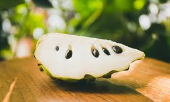
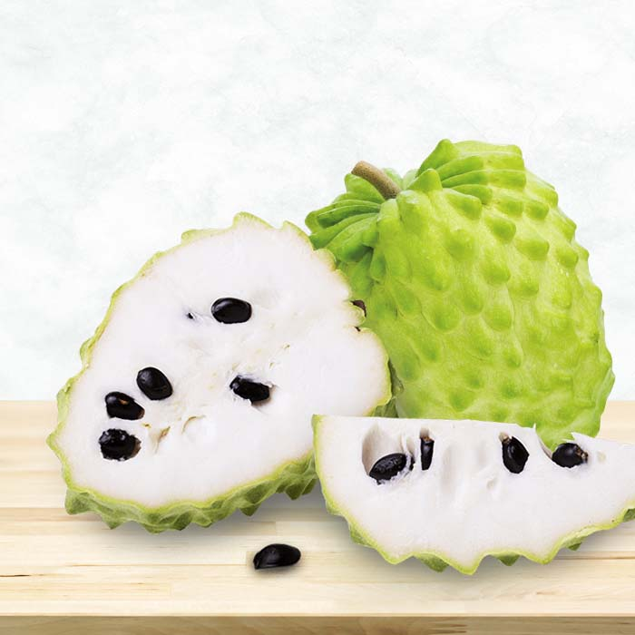

鳳梨釋迦
冷子番荔枝和番荔枝的雜交品種
鳳梨釋迦是番荔枝科的品種之一，是原產於南美安地列斯山脈的高海拔地區的冷子番荔枝、以及原產於熱帶美洲並且廣泛分佈在熱帶及亞熱帶地區的番荔枝雜交而來。台灣的鳳梨釋迦品種則是從以色列、澳洲等地引進並加以改良。

台灣的鳳梨釋迦改良後，成為高經濟價值果品
台灣是目前全世界鳳梨釋迦栽培面積最多、生產技術最佳、果品品質最優的國家。不僅果實外形碩大吸睛、表皮翠綠無暇、營養成分豐富多元，果品未軟熟前在室溫下通風保存可存放3～5天，軟熟後放入冰箱還能保存約3~7天，是高經濟價值的果品之一。

鳳梨釋迦跟鳳梨沒關係，但有鳳梨般酸甜滋味
鳳梨釋迦的品種和鳳梨沒有任何關係，但因味道比大目釋迦酸一點，像鳳梨般酸甜酸甜，才被稱作鳳梨釋迦。
糖度一般可達20°以上，雖高糖度，卻含有豐富的維生素及礦物質，其中維生素C的含量更是芭樂的8倍，另外也富含有助於心血管健康的鉀元素。愛好者應避免一次攝取過多。
資料來源: